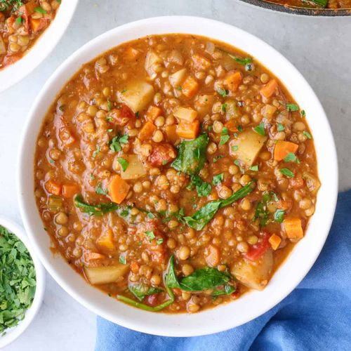

<back home
Lentil Stew

Special Garam-masala Lentil Stew
This is a special stew that makes use of a custom blended of garam masala.
Ingredients
- 1ltr of water
- 3 tablespoonfuls of macadamia oil
- 1 onion
- 2 teaspoonfuls of salt
- 1/2 kg of carrot
- 1/4 kg of lentils
- 1 tablespoonful of rosemary
- 1 teaspoonful of tumeric
- 1 teaspoonful of ginger
- 1 teaspoonful of coriander
- 1/2 teaspoon of black pepper
- 1/2 teaspoon of cardamom
Steps
- Fry onions in oil together with all the tumeric till onions turn to faint golden brown
- Add the grated carrots and stir for 3 minutes
- Add 1/2 of water and simmer for 4 minutes to soften
- Add the boiled lentils and simmer for 4 minutes for a pre-cook
- Add all the other spices to the mix together with capsicum and simmer for 3.5 minutes
- Serve yourself or family the delicious meal